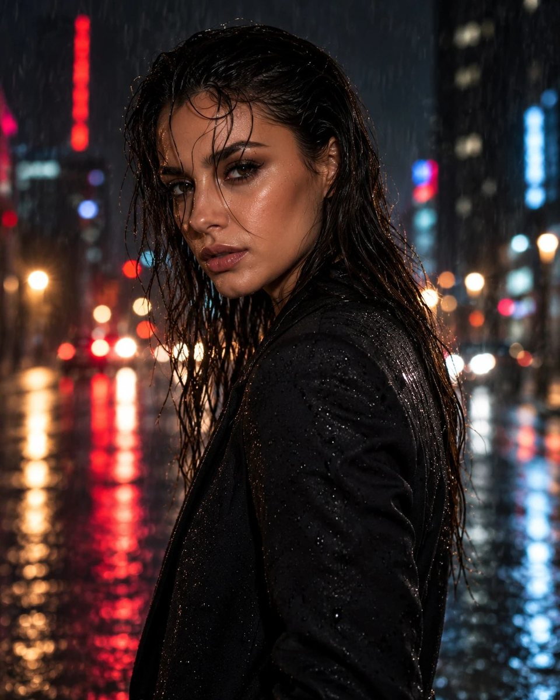
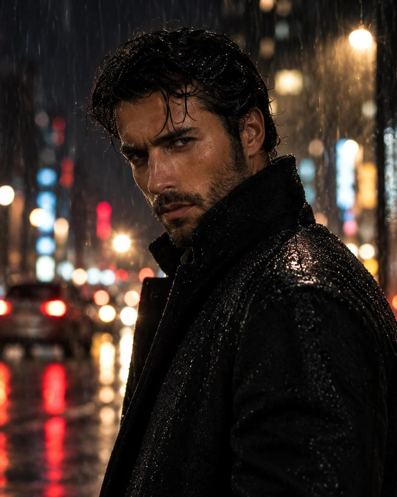
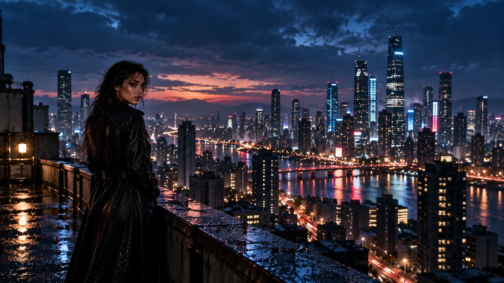
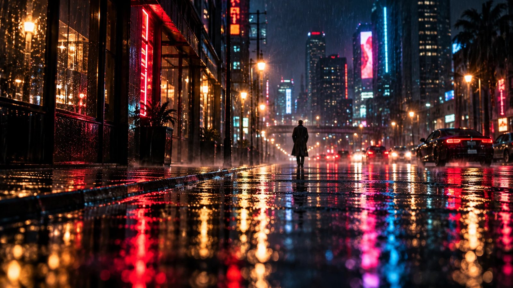
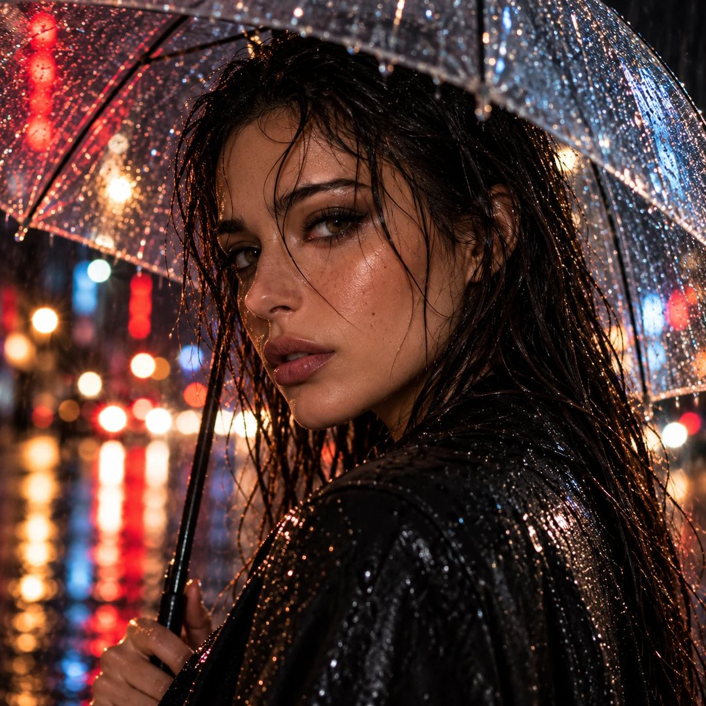
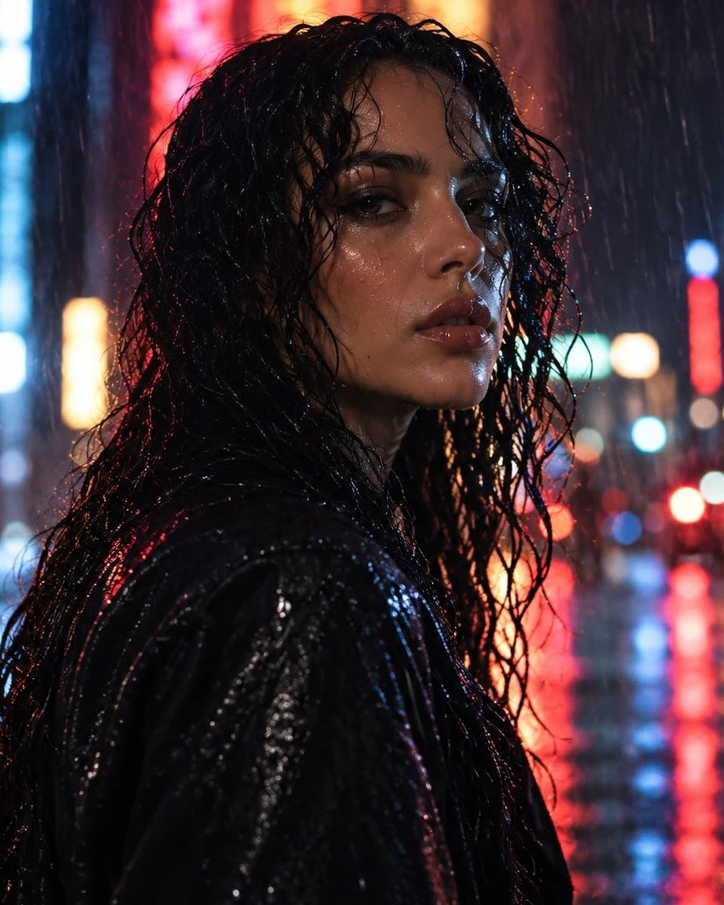
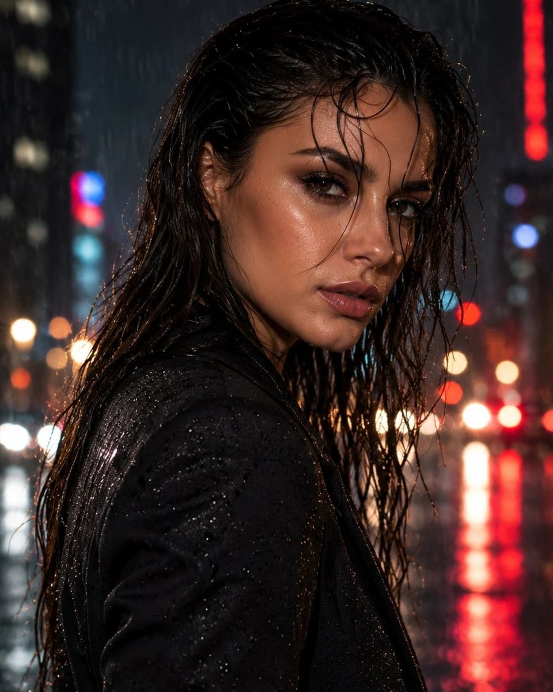
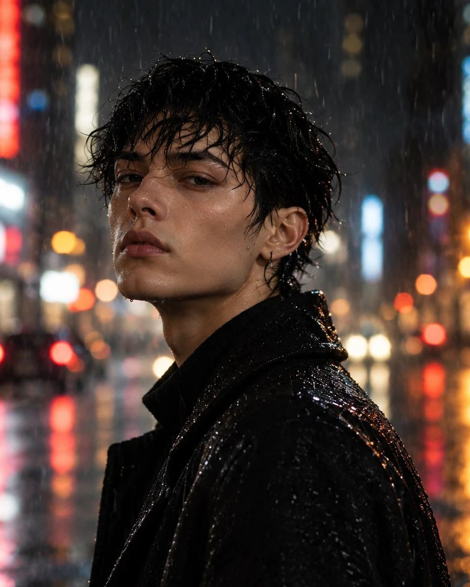

rain.editorials
15 posts18.4k followers128 following
Rain Editorials
Night portraits in the rain · fictional characters
Demo gallery for ImageToolkit screenshots · no real people
Night portraits in the rain · fictional characters
Demo gallery for ImageToolkit screenshots · no real people
POSTSSAVEDTAGGED







Fictional characters created for this demo.